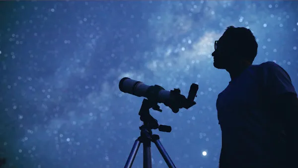

A astronomia é a ciência mais antiga do mundo. Ela investiga os corpos celestes em sua estrutura, formação e ciclo de vida, além dos fenômenos que acontecem no Universo.

Astronomia é uma ciência que estuda a composição e formação dos corpos
celestes e os
fenômenos que acontecem no Universo. É considerada a mais antiga das ciências, tendo se
originado, há milhares de anos, com base na observação do comportamento dos astros e
estrelas nos céus.
O surgimento de instrumentos e o aperfeiçoamento tecnológico permitiram grandes feitos e
descobertas no campo da astronomia, o que inclui evidências de como o Universo surgiu, a
caminhada sobre a superfície da Lua e a primeira imagem de um buraco negro.
Os profissionais formados em astronomia recebem o título de astrônomos, e podem trabalhar
com pesquisa e divulgação científica e também em museus, observatórios e planetários.
- A astronomia estuda os corpos celestes e os fenômenos do Universo.
- É a ciência mais antiga do mundo.
- A ciência astronômica se divide em oito ramos complementares de estudo, os quais incluem
áreas como a cosmologia e a astrofísica.
- Surgiu da curiosidade a respeito dos astros no céu, cujas observações começaram a milhares
de anos antes do presente. Civilizações antigas já construíam monumentos em pedra que
auxiliavam na determinação da passagem do tempo e das estações do ano e na
identificação dos
solstícios.
- Importantes contribuições à astronomia foram feitas, durante os séculos XVI e XVII, por
nomes como Nicolau Copérnico e Galileu Galilei.
- O surgimento de novas tecnologias e o aperfeiçoamento da ciência astronômica
proporcionaram
grandes feitos nos períodos posteriores.
- A faculdade de astronomia forma os astrônomos, que atuam principalmente na pesquisa e
divulgação científica. No Brasil, três instituições oferecem o curso gratuitamente.
- Astronomia e astrologia não são a mesma coisa. A astrologia é considerada uma
pseudociência
que analisa a influência dos astros na nossa vida e personalidade.
A astronomia é uma ciência da natureza que se dedica à compreensão de tudo aquilo que se encontra além da nossa atmosfera terrestre, estudando os astros e estrelas que compõem o Universo bem como os fenômenos que nele acontecem. Surgida a milhares de anos antes da Era Comum, a astronomia é considerada a ciência mais antiga do mundo.
Por definição, a astronomia estuda os diferentes corpos e objetos celestes que fazem parte
do Universo, dentre os quais se destacam:
- estrelas;
- luas;
- aglomerados de estrelas;
- planetas;
- meteoritos;
- asteroides;
- galáxias;
- nebulosas.
A ciência astronômica investiga a estrutura do Universo e de cada um dos
diferentes corpos
celestes que dele fazem parte, a forma como eles se originam e se desenvolvem, sua interação
e os fenômenos por eles provocados ou dos quais esses mesmos objetos resultam. Para isso,
utiliza-se de conceitos e formulações de outras disciplinas que são tão importantes quanto a
astronomia para a compreensão do cosmos, como a Física, a Matemática , a meteorologia, a
Química e até mesmo a Biologia.
Veja abaixo alguns exemplos de temas abordados nos estudos da astronomia:
- origem do Universo;
- surgimento dos planetas;
- cálculo de distâncias astronômicas;
- determinação da idade e composição química dos corpos celestes;
- Sistema Solar;
- Via Láctea, outras galáxias e fenômenos a elas associados;
- exoplanetas e outros corpos que se encontram fora do Sistema
Solar;
- nascimento, evolução e morte das estrelas;
- meio interestelar;
- origem e evolução dos buracos negros.
A astronomia trabalha com temas bastante complexos que são abordados por diferentes
ramificações dessa ciência. Dividida anteriormente em observacional (observação dos astros e
coleta de dados) e teórica (desenvolvimento de modelos e teorias com base nos dados
coletados), a astronomia hoje é composta pelos seguintes ramos:
- Astrobiologia: estuda a origem, a evolução e o futuro da vida no
Universo. Trata-se de um
dos campos mais recentes da astronomia.
- Astrofísica: é um ramo, tanto da astronomia quanto da Física, que aplica
os princípios da
Física para a compreensão das propriedades, dinâmicas e interações entre os diferentes
objetos e fenômenos do Universo.
- Astrometria: chamada também de astronomia de posição, a astrometria é o
ramo que estuda e
calcula a posição e o movimento dos astros celestes, além de analisar os exoplanetas. Por
meio da astrometria, é possível prever eclipses e chuvas de
meteoros.
- Astroquímica: estuda a composição química dos corpos celestes e as
reações entre as
diferentes partículas que formam o Universo e seus elementos.
- Astronomia estelar: estuda a classificação e também o ciclo de vida das
estrelas.
- Astronomia planetária: estuda o Sistema Solar e todos os elementos que o
formam, como os
planetas e as luas, aprofundando-se em temas como a formação e evolução dos planetas e a sua
composição geológica.
- Astronomia galática: estuda a estrutura, a formação, o desenvolvimento e
a morte das
galáxias, como a Via Láctea.
- Cosmologia: apesar de usada como sinônimo de astronomia em muitos casos,
trata-se, na
verdade, de um dos ramos de estudo dessa ciência. Ela se dedica à compreensão da origem do
Universo como um todo, bem como de sua evolução e estrutura. Faz parte dela temas como
energia escura, matéria escura e teoria das cordas.
Surgida da curiosidade humana sobre a forma como os astros se comportam no céu, a
astronomia é considerada a ciência mais antiga do mundo. As observações astronômicas
datam
de milhares de anos antes da Era Comum, com povos egípcios que viviam na região
de Assuã,
onde fica o sítio de Nabta Playa. Lá foi construído um círculo de pedras utilizado para
determinar a chegada do solstício de verão, sendo um dos primeiros registros físicos de como
a posição dos astros e a sua interação com o planeta Terra eram importantes
no cotidiano das
civilizações antigas.
Estruturas tão importantes quanto a de Nabta Playa foram construídas no norte da
Europa por
volta do ano 3000 a.C., como o monumento de Stonehenge, em Wiltshire, na Inglaterra. Além do
seu propósito religioso e espiritual, os círculos dessa construção eram utilizados na
identificação do início e do término dos solstícios de inverno e de
verão no Hemisfério
Norte.
Outros povos antigos, como babilônios e os assírios, foram também responsáveis por
grandes
contribuições à astronomia, algumas das quais identificadas em registros em
tábuas de argila
em escrita cuneiforme. As tábuas que foram preservadas se encontram hoje em exibição em
museus, como o Museu Britânico, na Inglaterra.
Com o passar do tempo, gregos, chineses, árabes e indianos aperfeiçoaram a
astronomia e
fizeram a introdução de novas proposições e elementos (obtidos com base em cálculos
matemáticos) a esse campo do conhecimento, imprimindo-lhe o caráter multidisciplinar que
hoje exibe. Atribui-se aos gregos a sistematização da astronomia e do princípio de sua
teorização, com destaque para nomes como Anaxímenes de Mileto, Pitágoras,
Aristóteles,
Hiparco e Ptolomeu.
As civilizações pré-colombianas nas Américas, como os
incas, os maias e os astecas, além de
manterem uma relação espiritual com os astros, guiavam-se por meio deles, e ainda
possuíam
monumentos com base nos quais observavam a passagem do tempo, as estações do
ano (o que era
importante para saber o momento mais adequado para o plantio e a colheita), e buscavam
também representar os corpos celestes e um modelo de outros mundos e do Universo.
No século XVI, na Europa, os escritos de Nicolau Copérnico representaram um marco na ciência
astronômica. O matemático polonês refutava a tese de Cláudio Ptolomeu de que o Sistema Solar
era geocêntrico, ou seja, tinha a Terra em seu centro. Assim, >Copérnico propôs o
modelo
heliocentrista, que dizia que o Sol era o centro do Sistema Solar, e era em
torno dele que
os planetas giravam.
Também no século XVI, o dinamarquês Tycho Brahe construiu um observatório
astronômico em
uma ilha próximo a Copenhague, ainda sem o auxílio de instrumentos como telescópios,
conhecido pela acurácia de suas observações, como sobre a posição do planeta
Marte.
Contemporâneo a ele, John Kepler foi responsável pelos modelos que
descreviam as órbitas dos
planetas em torno do Sol, dos quais derivam as três leis de Kepler.
No século XVII, o italiano Galileu Galilei fez contribuições muito importantes para a
astronomia e para a ciência como um todo. No campo astronômico, ele construiu seu
próprio
telescópio, por meio do qual realizou uma série de descobertas, como a de que
estrelas
formavam a Via Láctea, algumas das luas de Júpiter, manchas solares em
Vênus e a
irregularidade da superfície da Lua. Além disso, Galileu comprovou
o modelo heliocêntrico de
Copérnico.
O intervalo do século XVII ao XX foi marcado por grandes descobertas no campo da astronomia
e da Física, com destaque para Isaac Newton, Edmund Halley, Albert Einstein e Edwin
Hubble.
O aperfeiçoamento técnico e o advento de novos instrumentos, a partir da segunda metade do
século XX, permitiram observações mais precisas e a descoberta, por exemplo, da radiação
cósmica de fundo em micro-ondas, prova fundamental da expansão do Universo.
No ano de 1969, uma missão da Nasa colocou os primeiros astronautas para
andarem na
superfície da Lua, feito realizado por Neil Armstrong e Edwin Aldrin. Quase
seis décadas
mais tarde, em 2022, foi lançada a missão Artemis, com o objetivo de
repetir a caminhada
lunar. As descobertas recentes proporcionadas pelo avanço tecnológico incluem a primeira
imagem de um buraco negro, lançada pela Nasa em 2019, e o som que essas estruturas emitem,
divulgado em 2022, demonstrando assim a constante evolução da ciência astronômica.
- 4000 a.C.: os povos da Mesopotâmia utilizavam os zigurates para realizar observações
astronômicas;
- Em 2500 a.C.: a estrutura de pedras Stonehenge foi construída para marcar o início e o fim
dos solstícios;
- 1300 a.C.: os chineses iniciaram suas observações de eclipses, totalizando mais de 1700
observações ao longo de 2600 anos;
- Aproximadamente 560 a.C.: o filósofo grego Anaxímenes propôs que as estrelas estão fixas em
um envoltório sólido que gira em torno da Terra. Vinte anos antes, seu mestre, Anaximandro,
foi o primeiro filósofo a tentar explicar o movimento dos astros sem utilizar os artifícios
da mitologia;
- 550 a.C.: Pitágoras e seus estudantes descreveram o movimento dos astros como formas
circulares. Além disso, para eles, as estrelas e planetas eram perfeitamente esféricos;
- 350 a.C.: Aristóteles usou a sombra da Terra sobre a Lua, formada durante os eclipses, como
argumento para justificar o formato esférico do planeta;
- 280 a.C.: Aristarco calculou as dimensões relativas do Sol, Lua e Terra e também propôs o
primeiro modelo heliocêntrico (com o Sol no centro);
- 134 a.C.: o filósofo grego Hiparco descobriu o movimento de precessão da Terra e elaborou o
primeiro catálogo com as posições e brilhos das estrelas visíveis a olho nu;
- 140 d.C: Cláudio Ptolomeu desenvolveu seu modelo geocêntrico do Sistema Solar. Nesse modelo,
as órbitas planetárias são círculos (chamados de epiciclos), que, por sua vez, movem-se em
torno de outros círculos (chamados de deferentes);
- 1054 d.C.: Astrônomos chineses observaram a “morte” de uma estrela. A supernova foi visível
a olho nu durante o dia e deu lugar à Nebulosa do Caranguejo;
- 1543 d.C.: Nicolau Copérnico teve seu livro “Da revolução das esferas celestes” publicado,
lançando as bases do modelo heliocêntrico do Sistema Solar;
- 1580 d.C.: O astrônomo dinamarquês Tycho Brahe realizou as mais precisas observações
astronômicas a olho nu já feitas e elaborou o próprio modelo geocêntrico do Sistema Solar;
- 1600 d.C.: Galileu Galilei realizou experimentos de queda dos corpos e chegou muito próximo
do conceito moderno de inércia, contrariando as ideias vigentes sobre o movimento dos
astros. Na mesma época, Giordano Bruno afirmava existir outros planetas similares à Terra
fora do Sistema Solar e orbitando outras estrelas. Foi julgado como herege pelo Tribunal da
Inquisição e sentenciado à fogueira;
- 1609 d.C.: Galileu foi o primeiro a utilizar os telescópios para observar o céu, com isso,
conseguiu identificar quatro das maiores luas de Júpiter, provando que nem todos os astros
orbitavam em volta da Terra. Observou também irregularidades na superfície da Lua;
- 1610 d.C.: Johannes Kepler desenvolveu as três leis dos movimentos planetários (Lei das
órbitas, Lei das áreas e Lei dos períodos) utilizando os dados astronômicos obtidos por
Tycho Brahe;
- 1666 d.C.: o físico inglês Robert Hooke mostrou que forças que apontam para o centro de uma
curva formam trajetórias fechadas, assim como as órbitas dos planetas;"
- "1667 d.C.: Isaac Newton desenvolveu a Gravitação Universal, fornecendo argumentos
matemáticos capazes de explicar as órbitas planetárias e prever novos eventos astronômicos;
- 1718 d.C: Edmund Halley descobriu que as estrelas não são fixas, mas que se movem com
velocidades muito grandes;
- 1781 d.C.: William Herschel descobriu o planeta Urano e, tempos depois, conseguiu determinar
a velocidade do Sol, bem como o formato achatado da Via Láctea;
- 1842 d.C.: Christian Johann Doppler descreveu o efeito Doppler, que mede a variação na
frequência da luz. Esse importante fenômeno mais tarde foi usado para calcular as
velocidades de aproximação e afastamento de estrelas e galáxias;
- 1859-1875 d.: James Clerk Maxwell descobriu que a distribuição de velocidades das
partículas de um gás depende de sua temperatura. Em 1875, Lorde Kelvin e Hermann von
Helmoltz realizaram uma estimativa da idade do Sol;
- 1894-1900 d.: Wilhelm Wien e, depois, Max Planck forneceram importantes explicações sobre
a absorção e emissão de luz pelo corpo negro ao relacionar o comprimento de onda da luz
emitida pelas estrelas com a sua temperatura;
- 1905-1916 d.: Albert Einstein descreveu o Efeito fotoelétrico e desenvolveu a teoria da
gravitação universal;
- 1916 d.C.: Karl Schwarzschild descreveu os buracos negros como pequenas regiões do espaço
deformadas por uma grande massa;
- 1929 d.C.: Edwin Hubble descobriu que o Universo está em constante expansão;
- 1964 d.C.: Arno Penzias e Robert Wilson descobriram, por meio de radiotelescópios, a
existência da radiação cósmica de fundo, uma das evidências do surgimento do Universo;
- 1965 d.C.: Lançamento da sonda espacial Mariner 4, a primeira a conseguir tirar fotos da
superfície de outro planeta. Ela conseguiu obter imagens da superfície de Marte;
- 1969 d.C.: Neil Armstrong e Edwin Aldrin foram as primeiras pessoas a pisar na superfície da
Lua;
- 1973 d.C.: As sondas Voyager 1 e 2 chegaram a Júpiter e usaram sua grande aceleração
gravitacional como impulso para explorar outros planetas fora do Sistema Solar;
- 1990 d.C.: Lançamento do telescópio Hubble em órbita da Terra;
- 1998 d.C.: Astrônomos japoneses descobriram que os neutrinos podem ter massa, sendo
considerados fortes candidatos à matéria escura;
- 2001 d.C.: Com o auxílio de um detector de neutrinos, localizado no Canadá, um grupo de
cientistas conseguiu provar que essas pequenas partículas apresentam massa;
- 2002 d.C.: Primeiras evidências da presença de gelo na superfície de Marte."
A faculdade de Astronomia forma os bacharéis nessa área do conhecimento, que recebem o
título de astrônomos. O campo de atuação dos astrônomos é principalmente na pesquisa
e
divulgação científica, estando aptos ainda a trabalhar em observatórios,
planetários, museus
e empresas de tecnologia.
O curso de Astronomia tem duração média de oito semestres (ou quatro anos),
e tem uma grade
curricular formada por disciplinas pertencentes a áreas como a Física, a Matemática, a
computação, além da prática observacional. No Brasil, três universidades oferecem o curso de
Astronomia gratuitamente, cujo ingresso se dá via vestibular. São elas:
- Universidade Federal do Rio de Janeiro (UFRJ);
- Universidade de São Paulo (USP);
- Universidade Federal de Sergipe (UFS).
A astronomia e a astrologia são frequentemente confundidas e interpretadas como se fossem
uma única ciência ou área do conhecimento. Não obstante tenham em comum a observação dos
astros, elas não são equivalentes.
A astrologia, diferentemente da ciência astronômica, é comumente descrita como uma
pseudociência e também como uma forma de linguagem ou de arte. Ela busca,
ancorada na
análise da posição e do movimento dos corpos celestes nos céus (estrelas e constelações,
planetas, a Lua), determinar como esses astros influenciam na personalidade de um indivíduo
e nos acontecimentos do dia a dia.